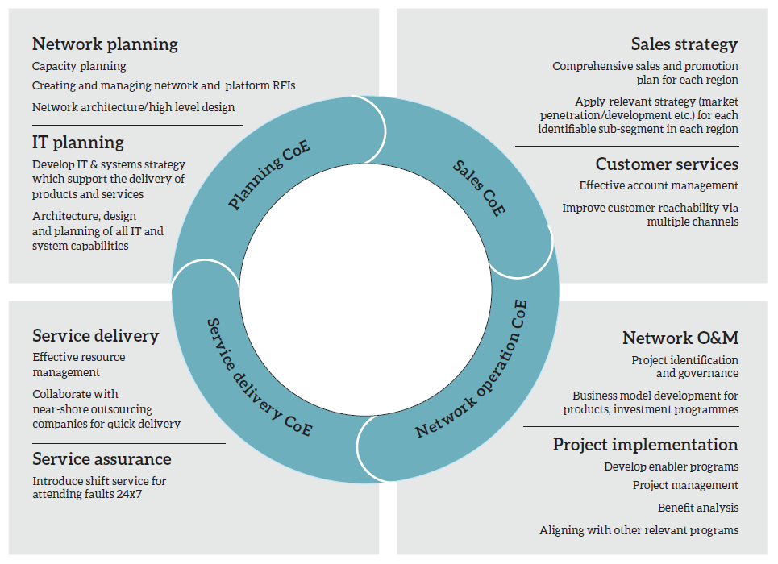

Internet usage and demand for the data and entertainment services in the country will continue to rise. Hence, a key strategic objectives of the SLT Group is to drive broadband-based consumer and enterprise services. This will include expanding the broadband footprint via the ‘Next Generation Network’, ‘National Backbone Network’ and provision of ADSL2+, VDSL2, optical fibre, carrier-grade Wi-Fi and both fixed and mobile 4G LTE technologies.
The SLT Group’s total integrated solution portfolio includes voice, Internet, networking, data hosting, managed services, cloud computing services and mobile based consumer and enterprise solutions provided through its fully owned subsidiary, Mobitel via its 2.5G, 3.5G and 4G LTE networks.
Regionally, SLT aims to be a key player by providing Global Services through major investments in multiple international submarine cable systems such as SEA-ME-WE 5, SEA-ME-WE 4, SEA-ME-WE 3, Bharat-Lanka submarine cable system and Dhiraagu-SLT submarine cable system.
In the paragraphs that follow we discuss the key strategic initiatives of the SLT Group in respect of its fixed and mobile ICT businesses.
| Objectives | Strategies |
| Operational excellence | Make SLT a great place to work by creating ‘centres of excellence’ |
| Promote business synergies through an integrated group approach | |
| Customer and market centricity | Offer innovative ICT and smart lifestyle solutions to all, anywhere, anytime |
| Provide best in class delivery and assurance | |
| Enhanced network and technology | Enable network and IT convergence and develop the network and IT infrastructure to handle the growing data traffic |
| Sustainable and inclusive growth | Catalyse national economic development |
| Invest in sustainable CSR initiatives |
Organisational transformation will be an ongoing process to face future challenges. It will focus on organisational restructuring, process automation associated with process simplification and realigning with the business requirements, good governance, promoting a learning and innovative culture, implementing best practices within the organisation, improving employee productivity and their level of satisfaction.
Realignment of the organisation structure to the needs of the business was successfully carried out in late 2015. Functions and key performance indicators (KPI) related to the new organisation structure were established and agreed by Chief Officers, and duly communicated to all concerned. Monitoring and evaluation systems are in place and operationalised in 2016.

We will aim to reap the benefits of synergy by sharing resources and developing centres of excellence (CoE) within the SLT Group and also through a collaborative approach (within the Group and external partners) to invest, innovate and to seize market opportunities more effectively.
In this context we see considerable opportunities for synergy with our mobile operator subsidiary Mobitel. However, we cannot merge, as required by the regulator. This is because merging of operators will be detrimental to the customer as it can affect pricing. However, we may synergise operationally, as we did in 2015, working as one team in all operational and marketing aspects such as cross selling each other’s products. For example, in providing a comprehensive ICT solution to a customer, Mobitel could take care of the mobility aspects, while SLT handles the overall architecture, data security, data centres, cloud and connectivity.
This requires penetrating into new market segments by moving beyond the traditional boundaries with innovative solutions that support prospects and customers to adopt a smarter lifestyle. Under this theme SLT make efforts to address the emerging market threats through new business models and future-focused products and technologies.
One of our long-term objectives is to differentiate our services through a superior quality of service and customer experiences that go beyond the expectations of our customers. Modernising the channels of interaction for the best convenience of customers, developing long-term relationships and earn the best ratings and recommendations from our customers are covered under this theme. Some of our KPIs under this include winning an international quality award and meeting global standards on service delivery and service interruptions.
In addition to convergence and expanding access network footprint with high speed broadband capabilities SLT will introduce future oriented technologies and services to support ‘Smart Sri Lanka’ plans.
We will speed up the nation in moving towards a digital economy by introducing the most modern technologies to provide super high speed broadband/Internet services, both wired and wireless. We have already acquired capabilities to serve 20 Mbps broadband speeds to a majority of customers connected to our wired network. Our goal is to gradually increase it to meet over 100 Mbps speed to all our broadband customers in time to come.
The ‘Smartline’ which uses the latest optical fibre technology that was launched in 2015 is one such initiative to take the nation towards a super speed digital economy and SLT will continue this drive until we seamlessly connect the whole nation to digital services available from anywhere in the world at any time. In this drive, SLT is increasing its core and transport network capabilities too in order to cater the data traffic volumes that are expected to grow rapidly with the expansions of SLT’s network footprint and digital services.
We contribute towards economic prosperity through pioneering technology and by expanding the broadband footprint. We support the growth of the country’s leading corporates as well as SMEs that contribute to employment and economic development. We are targeting each and every household with ultra high speed fibre optic connectivity and an array of ICT solutions over the Internet protocol (IP) space.
SLT will continue to invest heavily to further strengthen the country’s global connectivity, thereby supporting the national objective of making Sri Lanka the digital hub of the region. Examples include recent upgrades to several undersea optical fibre cable systems as well as launching of new systems.
As the incumbent ISP of Sri Lanka we maintain connectivity with all Internet hot spots across the globe, which also saw SLT setting up a point of presence (PoP) in Singapore. As the sole national backbone network (NBN) provider, SLT has deployed a countrywide, secure fibre network to fulfil domestic transport requirements of service providers.
We reach the hearts and minds of people as a responsible corporate citizen.
SLT always stays close to the public through their corporate social responsibility projects and activities with special focus on propelling social values, assisting underprivileged and needy groups of people in society and protecting heritage for the future. In addition, SLT contributes for the programmes on building a healthy, knowledgeable and responsible society.
| Objectives | Strategies |
| Strong overall market position | Gain market share in identified segments |
| Upgrade branches | |
| Build the Mobitel brand | |
| Enhanced broadband experience | Expand the network and increase download speed |
| Acquire more spectrum | |
| Drive broadband adoption | |
| Info comm services provider to key economic sectors | Build a strong infrastructure |
| Innovate and build on synergies | |
| Create and develop the market | |
| A world class organisation | Implement industry best practices |
Infocommunications or infocomm is the natural expansion of telecommunications with information processing and content handling functions including all types of electronic communications (fixed and mobile telephony, data communications, media communications, broadcasting, etc.) on a common digital technology base, mainly through Internet technology.